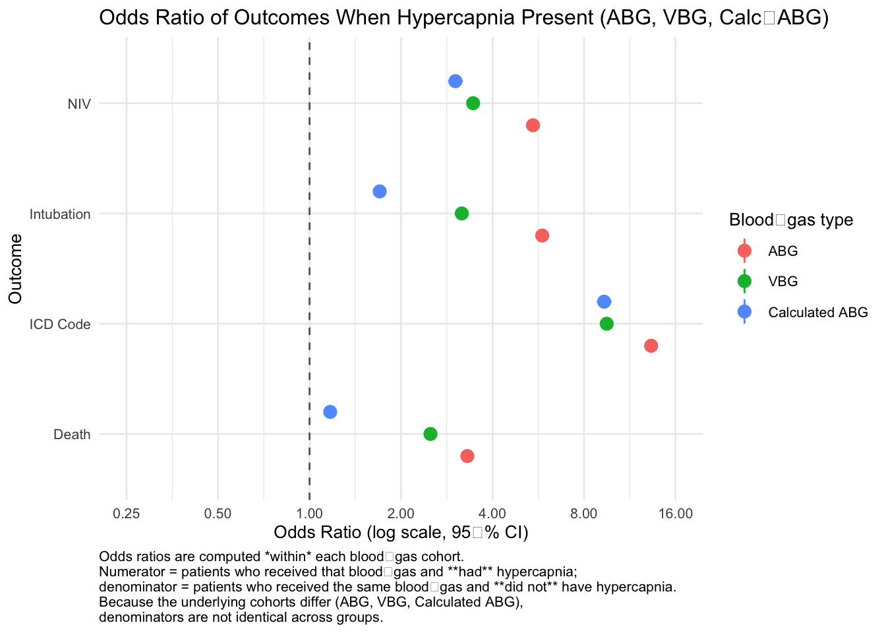
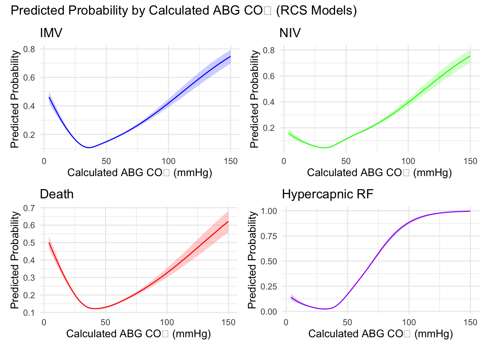
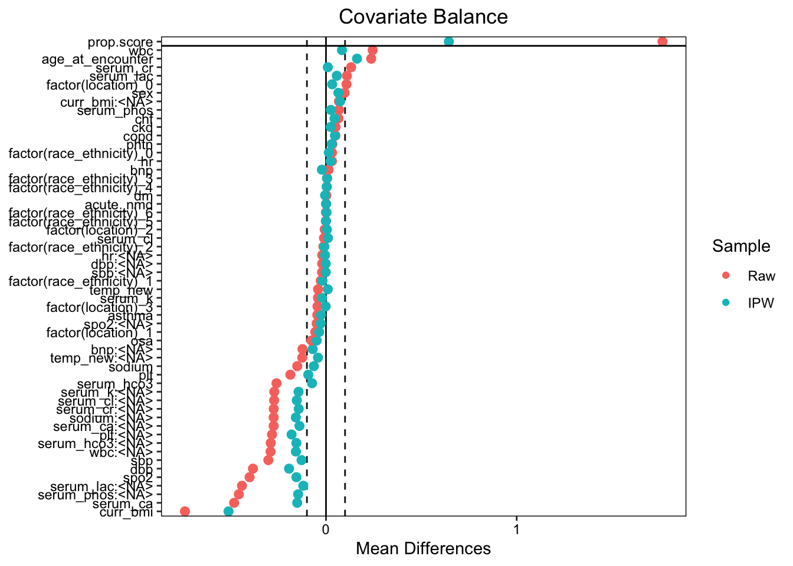

This code pulls in the master database (a STATA file) and does some initial cleaning - this will only need to be run once, and then the data can be accessed in the usual way.
BL 7/26/25 - new: I augmented this code block to check for all needed packages, and important everything up front
The following objects are masked from 'package:stats':
filter, lag
The following objects are masked from 'package:base':
intersect, setdiff, setequal, union
Loading required package: flextable
Loading required package: parallel
Loading required package: gbm
Loaded gbm 2.2.2
This version of gbm is no longer under development. Consider transitioning to gbm3, https://github.com/gbm-developers/gbm3
Loading required package: ggplot2
Loading required package: gt
Loading required package: gtsummary
Attaching package: 'gtsummary'
The following object is masked from 'package:flextable':
continuous_summary
Loading required package: haven
Loading required package: labelled
Loading required package: scales
Loading required package: modelsummary
Loading required package: officer
Loading required package: patchwork
Loading required package: rms
Loading required package: Hmisc
Attaching package: 'Hmisc'
The following object is masked from 'package:modelsummary':
Mean
The following object is masked from 'package:gt':
html
The following objects are masked from 'package:dplyr':
src, summarize
The following objects are masked from 'package:base':
format.pval, units
Attaching package: 'rms'
The following object is masked from 'package:WeightIt':
calibrate
Loading required package: survey
Loading required package: grid
Loading required package: Matrix
Loading required package: survival
Attaching package: 'survey'
The following object is masked from 'package:rms':
calibrate
The following object is masked from 'package:Hmisc':
deff
The following object is masked from 'package:WeightIt':
calibrate
The following object is masked from 'package:graphics':
dotchart
Loading required package: tibble
Loading required package: lubridate
Attaching package: 'lubridate'
The following objects are masked from 'package:base':
date, intersect, setdiff, union
Loading required package: sensitivitymw
Converts the data from a STATA format to rdata if the rdata file does not exist. If it does already exist, it just loads that.
# data_dir_name <- '/Users/blocke/Box Sync/Residency Personal Files/Scholarly Work/Locke Research Projects/abg-vbg-project/data' # 'data/' this is changed from justdata_dir_name <-'/Users/reblocke/Research/abg-vbg-project/data'rdata_file <-file.path(data_dir_name, "full_trinetx.rdata")stata_file <-file.path(data_dir_name, "full_db.dta")if (!dir.exists(data_dir_name)) {dir.create(data_dir_name)message("Directory 'data' created.")} else {message("Directory 'data' already exists.")}
Directory 'data' already exists.
if (file.exists(rdata_file)) {load(rdata_file)message("Loaded existing dataset from 'full_trinetx.rdata'.")} else {message("RData file not found. Reading Stata dataset...") stata_data <-read_dta(stata_file)message("Extracting variable labels...")var_label(stata_data)message("Extracting value labels...")sapply(stata_data, function(x) if (is.labelled(x)) val_labels(x))save(stata_data, file = rdata_file)message("Dataset saved as 'full_trinetx.rdata'.")load(rdata_file)message("Loaded newly saved dataset from 'full_trinetx.rdata'.")}
Loaded existing dataset from 'full_trinetx.rdata'.
study_codebook <- codebookr::codebook( stata_data,title ="Full TrinetX",subtitle ="Dataset Documentation",description ="This dataset contains patient-level records from the TrinetX database. It has been processed and converted from the original Stata file.")codebook_file <-file.path(data_dir_name, "codebookr.docx")print(study_codebook, codebook_file)message("Codebook saved as 'codebookr.docx' in the data directory.")
Codebook saved as 'codebookr.docx' in the data directory.
New Variable - Death at 60 days
subset_data <- subset_data %>%mutate(## 1. Did the patient die?died =if_else(!is.na(death_date), 1L, 0L),## 2. Absolute death date (if death_date is an offset)death_abs =if_else(!is.na(death_date), encounter_date + death_date,as.Date(NA)),## 3. Year month (YM) for encounter and deathenc_ym =floor_date(encounter_date, unit ="month"),death_ym =floor_date(death_abs , unit ="month"),## 4. Reference censoring date: 1 Jun 2024ref_ym =ymd("2024-06-01"),## 5. Months from encounter to death or censoringmonths_death_or_cens =case_when(!is.na(death_ym) ~interval(enc_ym, death_ym) %/%months(1),TRUE~interval(enc_ym, ref_ym) %/%months(1) ),## 6. Remove impossible valuesmonths_death_or_cens =if_else( months_death_or_cens <0| months_death_or_cens >16,NA_integer_, months_death_or_cens ),## 7. Death within one or two monthsdied_1mo =if_else(died ==1& months_death_or_cens <1, 1L, 0L),died_2mo =if_else(died ==1& months_death_or_cens <=1, 1L, 0L),## 8. Month of death (missing if censored)death_time =if_else(died ==1, months_death_or_cens, NA_integer_),## 9. Death within 60 days (new variable)death_60d =if_else(died ==1& death_abs <= (encounter_date +days(60)), 1L, 0L) ) %>%select(-enc_ym, -death_ym)subset_data <- subset_data %>%mutate(death_60d =if_else(died ==1& death_abs <= (encounter_date +days(60)), 1L, 0L) )
logit_intubated_calc <-glm(imv_proc ~ hypercapnia_calc, data = subset_data, family = binomial)summary(logit_intubated_calc)
Call:
glm(formula = imv_proc ~ hypercapnia_calc, family = binomial,
data = subset_data)
Coefficients:
Estimate Std. Error z value Pr(>|z|)
(Intercept) -1.96944 0.01348 -146.08 <2e-16 ***
hypercapnia_calc 0.53148 0.02366 22.46 <2e-16 ***
---
Signif. codes: 0 '***' 0.001 '**' 0.01 '*' 0.05 '.' 0.1 ' ' 1
(Dispersion parameter for binomial family taken to be 1)
Null deviance: 55227 on 68250 degrees of freedom
Residual deviance: 54743 on 68249 degrees of freedom
(765225 observations deleted due to missingness)
AIC: 54747
Number of Fisher Scoring iterations: 4
logit_niv_calc <-glm(niv_proc ~ hypercapnia_calc, data = subset_data, family = binomial)summary(logit_niv_calc)
Call:
glm(formula = niv_proc ~ hypercapnia_calc, family = binomial,
data = subset_data)
Coefficients:
Estimate Std. Error z value Pr(>|z|)
(Intercept) -2.82073 0.01919 -147.01 <2e-16 ***
hypercapnia_calc 1.10527 0.02867 38.55 <2e-16 ***
---
Signif. codes: 0 '***' 0.001 '**' 0.01 '*' 0.05 '.' 0.1 ' ' 1
(Dispersion parameter for binomial family taken to be 1)
Null deviance: 38140 on 68250 degrees of freedom
Residual deviance: 36723 on 68249 degrees of freedom
(765225 observations deleted due to missingness)
AIC: 36727
Number of Fisher Scoring iterations: 5
logit_icd_calc <-glm(hypercap_resp_failure ~ hypercapnia_calc, data = subset_data, family = binomial)summary(logit_icd_calc)
Call:
glm(formula = hypercap_resp_failure ~ hypercapnia_calc, family = binomial,
data = subset_data)
Coefficients:
Estimate Std. Error z value Pr(>|z|)
(Intercept) -3.18924 0.02267 -140.68 <2e-16 ***
hypercapnia_calc 2.23162 0.02840 78.58 <2e-16 ***
---
Signif. codes: 0 '***' 0.001 '**' 0.01 '*' 0.05 '.' 0.1 ' ' 1
(Dispersion parameter for binomial family taken to be 1)
Null deviance: 44070 on 68250 degrees of freedom
Residual deviance: 37196 on 68249 degrees of freedom
(765225 observations deleted due to missingness)
AIC: 37200
Number of Fisher Scoring iterations: 6
Display regression coefficients for binary Farkas adjustment (hypercapnia yes/no as predictor)
modelsummary(list("Intubated"= logit_intubated_calc,"NIV"= logit_niv_calc,"Death"= logit_death_calc,"ICD Hyper"= logit_icd_calc),exponentiate =TRUE,conf_level =0.95,estimate ="{estimate}",statistic ="({conf.low}, {conf.high})",coef_omit ="(Intercept)",gof_omit =".*", # drop all goodness-of-fit rowsfmt =2, # 2 decimal places everywhereoutput ="gt") |> gt::tab_header(title ="Odds Ratios for Calculated Hypercapnia (>45 mmHg)'s association with...")
Odds Ratios for Calculated Hypercapnia (>45 mmHg)'s association with...
Intubated
NIV
Death
ICD Hyper
hypercapnia_calc
1.70
3.02
1.17
9.31
(1.62, 1.78)
(2.85, 3.19)
(1.11, 1.23)
(8.81, 9.85)
Odds Ratio Graph of all 3 simple, binary-predictor logistic regressions
tidy_with_labels <-function(model, group_label, outcome_label) {tidy(model, exponentiate =TRUE, conf.int =TRUE) %>%filter(term =="hypercap_on_abg"| term =="hypercap_on_vbg"| term =="hypercapnia_calc") %>%mutate(group = group_label,outcome = outcome_label )}# --- ABG Models ---abg_intub <-tidy_with_labels(glm(imv_proc ~ hypercap_on_abg, data = subset_data, family = binomial), "ABG", "Intubation")abg_niv <-tidy_with_labels(glm(niv_proc ~ hypercap_on_abg, data = subset_data, family = binomial), "ABG", "NIV")abg_death <-tidy_with_labels(glm(death_60d ~ hypercap_on_abg, data = subset_data, family = binomial), "ABG", "Death")abg_icd <-tidy_with_labels(glm(hypercap_resp_failure ~ hypercap_on_abg, data = subset_data, family = binomial), "ABG", "ICD Code")# --- VBG Models ---vbg_intub <-tidy_with_labels(glm(imv_proc ~ hypercap_on_vbg, data = subset_data, family = binomial), "VBG", "Intubation")vbg_niv <-tidy_with_labels(glm(niv_proc ~ hypercap_on_vbg, data = subset_data, family = binomial), "VBG", "NIV")vbg_death <-tidy_with_labels(glm(death_60d ~ hypercap_on_vbg, data = subset_data, family = binomial), "VBG", "Death")vbg_icd <-tidy_with_labels(glm(hypercap_resp_failure ~ hypercap_on_vbg, data = subset_data, family = binomial), "VBG", "ICD Code")# --- Calculated ABG Models ---calc_intub <-tidy_with_labels(glm(imv_proc ~ hypercapnia_calc, data = subset_data, family = binomial), "Calculated ABG", "Intubation")calc_niv <-tidy_with_labels(glm(niv_proc ~ hypercapnia_calc, data = subset_data, family = binomial), "Calculated ABG", "NIV")calc_death <-tidy_with_labels(glm(death_60d ~ hypercapnia_calc, data = subset_data, family = binomial), "Calculated ABG", "Death")calc_icd <-tidy_with_labels(glm(hypercap_resp_failure ~ hypercapnia_calc, data = subset_data, family = binomial), "Calculated ABG", "ICD Code")# --- Combine all model results ---combined_or_df <-bind_rows( abg_intub, abg_niv, abg_death, abg_icd, vbg_intub, vbg_niv, vbg_death, vbg_icd, calc_intub, calc_niv, calc_death, calc_icd)
BL 7/16/2025 - Note: new version below. For this, I changed the title, made the x-axis logarithmic (always logarithmic scale when the variable is a ratio, like an odds ratio or risk ratio), and added the clarification about denominators.
ggplot(combined_or_df, aes(x = outcome, y = estimate, ymin = conf.low, ymax = conf.high, color = group)) +geom_pointrange(position =position_dodge(width =0.5), size =0.6) +geom_hline(yintercept =1, linetype ="dashed", color ="gray40") +coord_flip() +labs(title ="Unweighted, Unadjusted OR of Outcomes when Hypercapnia Present ABG, VBG, Farkas-VBG ",x ="Outcome",y ="Odds Ratio (95% CI)",color ="Group" ) +scale_y_log10(limits =c(-0.5, 15)) +# optional log scale for better spacingtheme_minimal(base_size =10)
Warning in transform$transform(limits): NaNs produced
# ── prerequisites ───────────────────────────────────────────────────────────────# order groups before plottingcombined_or_df$group <-factor( combined_or_df$group,levels =c("ABG", "VBG", "Calculated ABG"))# ── plot ────────────────────────────────────────────────────────────────────────ggplot( combined_or_df,aes(x = outcome,y = estimate,ymin = conf.low,ymax = conf.high,color = group )) +geom_pointrange(position =position_dodge(width =0.6),size =0.6 ) +geom_hline(yintercept =1, linetype ="dashed", colour ="grey40") +## NOTE: scale_y_log10 applies to the axis that *becomes horizontal* after coord_flip()scale_y_log10(breaks =c(0.25, 0.5, 1, 2, 4, 8, 16),limits =c(0.25, 16),labels =number_format(accuracy =0.01) ) +coord_flip() +labs(title ="Odds Ratio of Outcomes When Hypercapnia Present (ABG, VBG, Calc‑ABG)",x ="Outcome",y ="Odds Ratio (log scale, 95 % CI)",color ="Blood‑gas type",caption =paste("Odds ratios are computed *within* each blood‑gas cohort.","Numerator = patients who received that blood‑gas and **had** hypercapnia;","denominator = patients who received the same blood‑gas and **did not** have hypercapnia.","Because the underlying cohorts differ (ABG, VBG, Calculated ABG),","denominators are not identical across groups.",sep ="\n" ) ) +theme_minimal(base_size =10) +theme(plot.caption =element_text(hjust =0))

Now doing 3 groups instead of binary (above, normal and below)
subset_data_abg <- subset_data %>%select(calc_abg, imv_proc, niv_proc, death_60d, hypercap_resp_failure) %>%filter(!is.na(calc_abg) &complete.cases(.))dd <-datadist(subset_data_abg)options(datadist ="dd")fit_imv_abg <-lrm(imv_proc ~rcs(calc_abg, 4), data = subset_data_abg)fit_niv_abg <-lrm(niv_proc ~rcs(calc_abg, 4), data = subset_data_abg)fit_death_abg <-lrm(death_60d ~rcs(calc_abg, 4), data = subset_data_abg)fit_hcrf_abg <-lrm(hypercap_resp_failure ~rcs(calc_abg, 4), data = subset_data_abg)pred_imv_abg <-as.data.frame(Predict(fit_imv_abg, calc_abg, fun = plogis))pred_niv_abg <-as.data.frame(Predict(fit_niv_abg, calc_abg, fun = plogis))pred_death_abg <-as.data.frame(Predict(fit_death_abg, calc_abg, fun = plogis))pred_hcrf_abg <-as.data.frame(Predict(fit_hcrf_abg, calc_abg, fun = plogis))plot_imv_abg <-ggplot(pred_imv_abg, aes(x = calc_abg, y = yhat)) +geom_line(color ="blue") +geom_ribbon(aes(ymin = lower, ymax = upper), fill ="blue", alpha =0.2) +labs(title ="IMV", x ="Calculated ABG CO₂ (mmHg)", y ="Predicted Probability") +theme_minimal()plot_niv_abg <-ggplot(pred_niv_abg, aes(x = calc_abg, y = yhat)) +geom_line(color ="green") +geom_ribbon(aes(ymin = lower, ymax = upper), fill ="green", alpha =0.2) +labs(title ="NIV", x ="Calculated ABG CO₂ (mmHg)", y ="Predicted Probability") +theme_minimal()plot_death_abg <-ggplot(pred_death_abg, aes(x = calc_abg, y = yhat)) +geom_line(color ="red") +geom_ribbon(aes(ymin = lower, ymax = upper), fill ="red", alpha =0.2) +labs(title ="Death", x ="Calculated ABG CO₂ (mmHg)", y ="Predicted Probability") +theme_minimal()plot_hcrf_abg <-ggplot(pred_hcrf_abg, aes(x = calc_abg, y = yhat)) +geom_line(color ="purple") +geom_ribbon(aes(ymin = lower, ymax = upper), fill ="purple", alpha =0.2) +labs(title ="Hypercapnic RF", x ="Calculated ABG CO₂ (mmHg)", y ="Predicted Probability") +theme_minimal()((plot_imv_abg | plot_niv_abg) / (plot_death_abg | plot_hcrf_abg)) +plot_annotation(title ="Predicted Probability by Calculated ABG CO₂ (RCS Models)")

Inverse Propensity Weighting
IPW done using Gradient Boosting Methods (GBM) - a type of decision-tree based machine learning. “Random forests and GBM are designed to automatically include relevant interactions for variables included in the model. As such, using a GBM to estimate the PS model, can reduce model misspecification, since the analyst is not required to identify relevant interactions or nonlinearities.” from this citation: PMID: 39947224https://pmc.ncbi.nlm.nih.gov/articles/PMC11825193/
Current propensity score uses age_at_encounter + sex + race_ethnicity (remember - have to specify to use this as a factor variable) + curr_bmi + copd + asthma + osa + chf + acute_nmd + phtn + location (as a factor variable)
Note: for all these, I suggested new GBM adjustments that accomplish the following:
Smaller GBM & stopping rule → faster fit, avoids over‑fitting, lighter tails (which lead to extreme weights that are problematic).
bal.tab() documents balance; aim is to adjust spec until standard mean difference (SMD) < 0.1.
Weight stabilization (divide by mean) mitigates a few huge weights. I also winsorized, which is a way to avoid very extreme weights (ie you set <1st percentile to the 1st percentile value, and >99th percentile to 99th percentile.
Uses robust variance estimation (e.g. allows the variances to change by PaCO2) for IP‑weighted GLM; works with splines via rcs(). This is a bit nuanced but I think good to change even though it adds complexity
Warning: Standardized mean differences and raw mean differences are present in
the same plot. Use the `stars` argument to distinguish between them and
appropriately label the x-axis. See `?love.plot` for details.

# ── 4. survey design with the same weights ───────────────────────────────────design <-svydesign(ids =~1, weights =~w_abg, data = subset_data)# ── 5. outcome models (examples) ─────────────────────────────────────────────fit_niv <-svyglm(niv_proc ~ has_abg, design = design, family =quasibinomial())fit_imv <-svyglm(imv_proc ~ has_abg, design = design, family =quasibinomial())fit_death <-svyglm(death_60d ~ has_abg, design = design, family =quasibinomial())fit_icd <-svyglm(hypercap_resp_failure ~ has_abg, design = design, family =quasibinomial())# quick effect estimateslapply(list(IMV = fit_imv, NIV = fit_niv, Death = fit_death, ICD = fit_icd), function(m) {c(OR =exp(coef(m)[2]),LCL =exp(confint(m)[2,1]),UCL =exp(confint(m)[2,2]))})